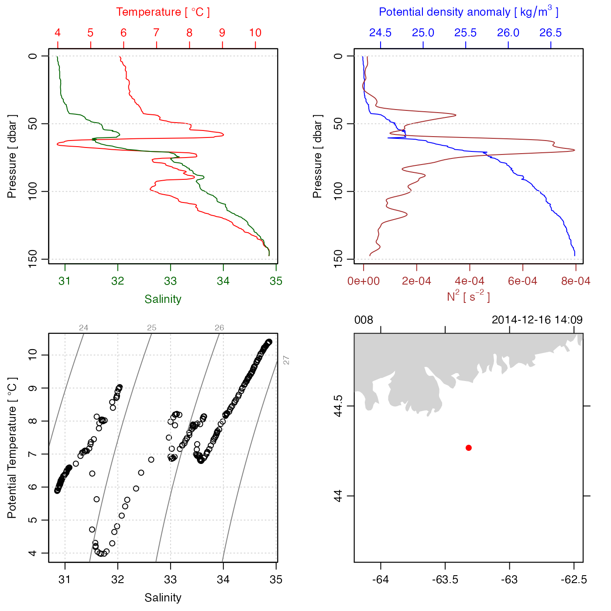

The location is approximately 30km southeast of Halifax Harbour, at "Station 2" of the Halifax Line on the Scotian Shelf.
Other raw datasets:
adp_rdi.000,
ctd.cnv,
ctd_aml.csv,
d200321-001.ctd,
d201211_0011.cnv,
xbt.edf
Other things related to ctd data:
[[,ctd-method,
[[<-,ctd-method,
as.ctd(),
cnvName2oceName(),
ctd-class,
ctd.cnv,
ctdDecimate(),
ctdFindProfiles(),
ctdRaw,
ctdRepair(),
ctdTrim(),
ctd_aml.csv,
ctd,
d200321-001.ctd,
d201211_0011.cnv,
handleFlags,ctd-method,
initialize,ctd-method,
initializeFlagScheme,ctd-method,
oceNames2whpNames(),
oceUnits2whpUnits(),
plot,ctd-method,
plotProfile(),
plotScan(),
plotTS(),
read.ctd.aml(),
read.ctd.itp(),
read.ctd.odf(),
read.ctd.odv(),
read.ctd.sbe(),
read.ctd.ssda(),
read.ctd.woce.other(),
read.ctd.woce(),
read.ctd(),
setFlags,ctd-method,
subset,ctd-method,
summary,ctd-method,
woceNames2oceNames(),
woceUnit2oceUnit(),
write.ctd()
Other things related to odf data:
ODF2oce(),
ODFListFromHeader(),
ODFNames2oceNames(),
[[,odf-method,
[[<-,odf-method,
odf-class,
plot,odf-method,
read.ctd.odf(),
read.odf(),
subset,odf-method,
summary,odf-method
ctd <- read.ctd(system.file("extdata", "CTD_BCD2014666_008_1_DN.ODF.gz", package="oce"))
#> Warning: "conductivity" (code name "CRAT_01") is a conductivity ratio, which has no units, but the file lists "s/m" as a unit. Consult ?read.odf to see how to rectify this error.
summary(ctd)
#> CTD Summary
#> -----------
#>
#> * Instrument: Sea-Bird SBE25
#> * Institute: OESD @ BIO
#> * Chief scientist: Catherine Johnson
#> * Start time: 2014-12-16 14:09:09
#> * Cruise: Scotian Shelf
#> * Vessel: CCGS SIGMA T (Call Sign: unknown)
#> * Station: 008
#> * Location: 44.267N 63.318W
#> * Water depth: 156
#> * Data Overview
#>
#> Min. Mean Max. Dim. NAs OriginalName
#> scan 1781 3695.5 4995 294 0 CNTR_01
#> pressure [dbar] 0.5 74.248 147.5 294 0 PRES_01
#> temperature [°C, IPTS-68] 3.9824 7.5195 10.421 294 0 TEMP_01
#> conductivity [S/m] 0.69343 0.78562 0.89532 294 0 CRAT_01
#> oxygenVoltage [V] 1.6158 2.2027 2.5992 294 0 OXYV_01
#> fluorescence [mg/m³] 0.3636 1.6972 4.5732 294 0 FLOR_01
#> PSAR 0.00197 4.7286 104.43 294 0 PSAR_01
#> salinity [PSS-78] 30.851 32.693 34.868 294 0 PSAL_01
#> oxygen [ml/l] 3.0636 5.0665 6.5227 294 0 DOXY_01
#> sigmaTheta [kg/m³] 24.29 25.515 26.78 294 0 SIGP_01
#>
#> * Data-quality Flags
#>
#> pressure: "1" 294
#> temperature: "1" 294
#> conductivity: "1" 294
#> oxygenVoltage: "1" 294
#> fluorescence: "1" 294
#> PSAR: "1" 294
#> salinity: "1" 293, "3" 1
#> oxygen: "1" 294
#> sigmaTheta: "1" 290, "3" 4
#> overall(FFFF): "0" 294
#> overall(QCFF): "0" 290, "2048" 3, "4096" 1
#>
#> * Processing Log
#>
#> - 2022-05-11 16:48:07 UTC: `create 'ctd' object`
#> - 2022-05-11 16:48:07 UTC: `as.ctd(salinity = odf, debug = debug - 1)`
plot(ctd)
